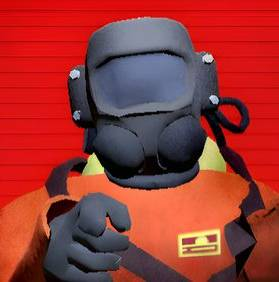

-->
-->
You are valuable employees of the company. This website is a resource for your travels. Your primary objective is to venture out and collect that scrap for the company in order to meet the given profit quota. The company incentivizes its contracted employees in two ways:
- Offering credits in exchange for scrap. Employees can then use these credits to explore new and more scrap-rich moons, purchase equipment, ship upgrades and decorations.
- Discouraging failure by discharging employees should they fail to meet the profit quota.
When you have collected your scrap for the week you will return to the company to settle on a price for your goods. Gordion is the moon that The Company resides on. Employees will descend onto what appears to be a loading dock in front of a colossal walled structure in the middle of a land-less waterworld type Moon. This is where employees engage in selling their collected scrap for The Company. The Company requires a lot of scrap, so collecting tons from abandoned, seemingly once industrialized moons is common procedure. See other pages for information on any equipment or obstacles you might encounter while on the moons.